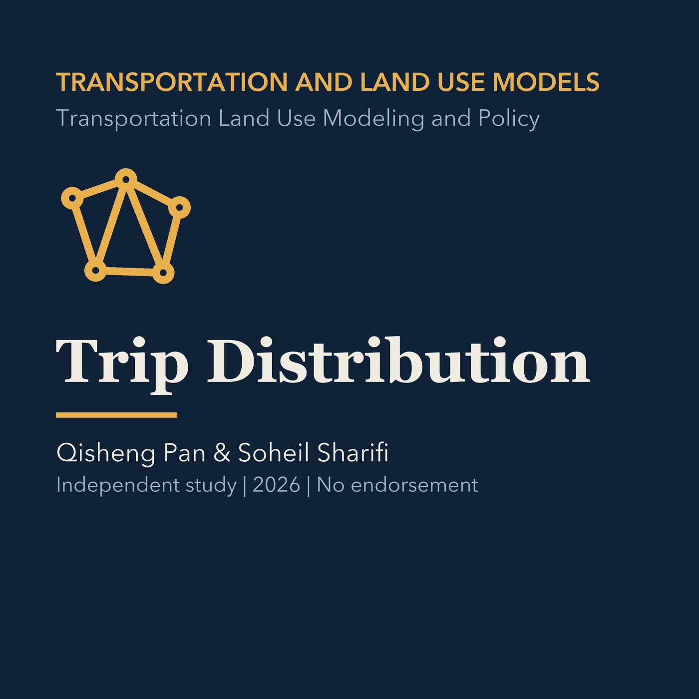

EPISODE 11
Trip Distribution
Explains growth-factor and gravity approaches, friction factors, calibration, and origin-destination patterns, followed by a Torrance application.

- Stable GUID
eeffe2f0-f74e-5510-a7aa-d925dc74a994- Release
- transportation-land-use-modeling-v2026.2
- SHA-256
53d41eb20dcdf69a9225bed0a86cc1cfaf3d756929c562d8bfe46c9dc22f15f5